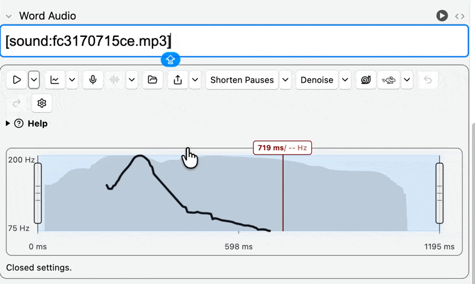
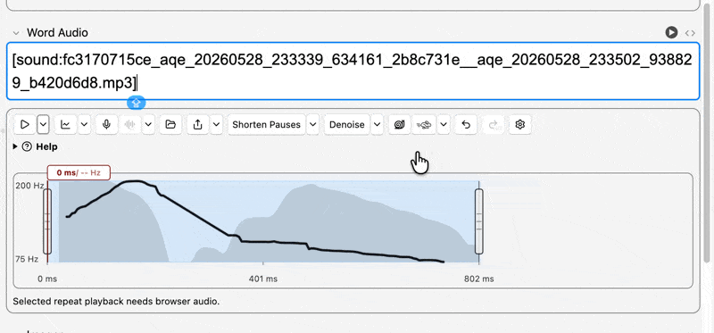
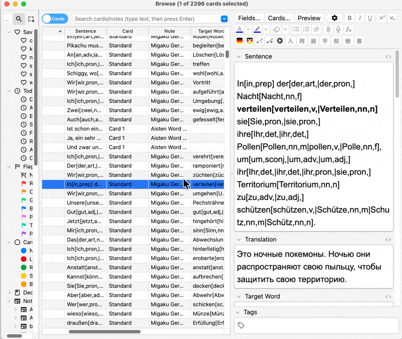
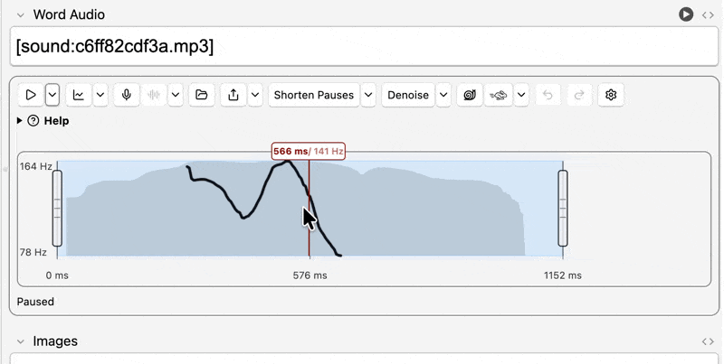
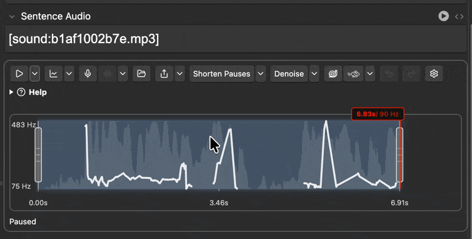

Play
Playback and repeat controls.
Anki desktop add-on
Trim sentence-mining clips, adjust speed and volume, shorten long pauses, denoise recordings, and inspect prosody without leaving the note editor.

The add-on works directly inside the Anki editor and browser, so audio cleanup stays close to the cards you are studying.




Focus a field with a supported [sound:...] reference and use editor controls directly
beside the audio. Common actions include playback, speed changes, volume changes, conversion,
pause shortening, denoise processing, file reveal, sharing, undo, and redo.
The add-on can render inline prosody views that show pitch, intensity, and playback position. These views help compare pronunciation, inspect rhythm, and navigate useful regions of an audio clip.
Short walkthrough videos open in your browser through stable GitHub Pages links. The add-on uses these first-party routes so video destinations can change without a new add-on release.
Playback and repeat controls.
Pitch and loudness visualization settings.
Upload and copy-link workflow.
Learner voice recording controls.
Choosing output formats.
No YouTube embed yet. The stable route currently opens this section.
Pause aggressiveness settings.
Noise and voice-isolation options.
Pitch-preserving hum generation.
No YouTube embed yet. The stable route currently opens this section.
Slower and faster audio controls.
Louder and quieter audio controls.
Browser batch workflow.
Browser actions support batch prosody visualization generation for selected notes. This is useful when you want visual aids prepared across a group of audio cards instead of generating each one by hand.
Edits render to new MP3 files and update the field reference. The original media file remains in place, so experiments and cleanup work do not overwrite the source audio.
The page intentionally links to GitHub Releases rather than a direct asset file, so versioned and platform-specific archive names can change without breaking the main install button.
Download the latest .ankiaddon archive from GitHub Releases, then install it in Anki
through the desktop add-on manager.
ffmpeg and ffprobe, where needed.Source code, development notes, and release assets live in the GitHub repository. Use the repository issue tracker for reproducible problems and include Anki version, operating system, and the relevant audio file workflow.